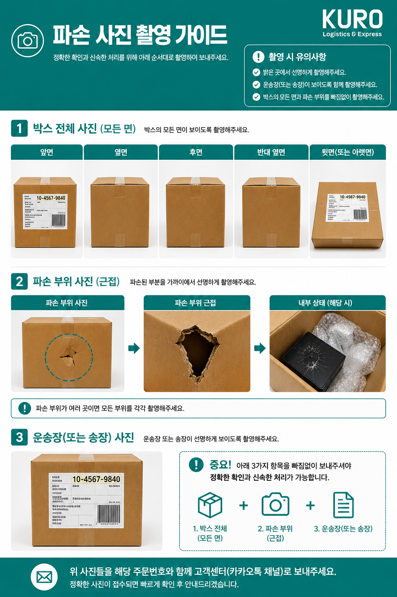

본 규정은 KURO Logi 이용약관의 일부를 구성하며, 서비스 이용 시 본 규정에 동의한 것으로 간주됩니다.
A. KURO 검수규정 안내
1. 기본 검수 (무료)
기본 검수는 무료 서비스이며, 아래 항목에 한하여 육안으로 간단하게 확인합니다.
· 문서상의 상품명 확인
· 상품 수량 확인
· 옵션(색상/사이즈 등) 확인
· 육안으로 확인 가능한 심각한 파손 여부
※ 제품의 컬러, 사이즈 등 옵션에 해당하는 내용은 반드시 제품명이 아닌 옵션에 명시해 주셔야 합니다.
※기본 검수는 무료 서비스이므로, 검수 과정에서 발견하지 못한 사항에 대해서는 책임 및 보상이 어렵습니다.
※ 기본 검수는 작업자의 육안 확인만 진행되며 아래 사항은 검수 대상이 아닙니다.
| · 파손여부 | · 미세한 스크래치 | · 오염 |
| · 실밥 | · 색상 차이 | · 재질 차이 |
| · 제조사 마감 품질 | · 상품의 진위 여부 | · 정품 여부 |
| · 기능 이상 | · 구성품 누락 | · 내부 불량 |
| · 유통기한 확인 |
2. 상세 사진 검수 (유료)
상세 사진 검수를 신청한 상품은 작업자가 다각도에서 약 5~10장의 사진을 촬영하여 카카오톡 채널을 통해 전달드립니다.
회원사에서 직접 사진을 확인한 후.
· 출고
· 보류
· 반품
여부를 결정해 주시면 해당 내용에 따라 작업을 진행합니다.
상세 사진 검수는 작업자의 주관적인 판단이 아닌 회원사의 최종 확인을 기준으로 출고됩니다.
3. 검수 제외 항목
다음 항목은 검수가 어렵거나 전문적인 확인이 필요한 사항으로 검수 대상이 아닙니다.
| 외관 | 기능 |
|---|---|
| 파손 여부 | 전원 작동 여부 |
| 미세 스크래치 | 전자제품 기능 확인 |
| 오염 | 충전 여부 |
| 실밥 | 인터넷 연결 |
| 선물용 포장(기프트 랩핑)된 제품 | 소프트웨어 이상 |
| 정품여부 | 향기,맛 확인 |
| 사용 흔적 | 개봉 테스트가 필요한 상품 |
| 밀봉 상품 내부 상태 |
4. 동일 트래킹번호 상품 관리
동일한 트래킹번호로 입고된 상품은 반드시 동일한 시점에 주문서를 작성해 주시기 바랍니다.
예를들어
· A상품 주문서 작성
· B상품 주문서 미작성
상태에서 동일 박스로 입고된 경우,
작업자가 하나의 화물로 인식하여 주문서가 없는 상품까지 함께 발송되는 사례가 발생할 수 있습니다.
(특히, 완충재 등으로 시야가 가려져, 미등록 제품이 함께 들어있어도 안보이는 경우가 많습니다)
이 경우 회원사의 주문서 작성 누락으로 간주되며 보상이 어렵습니다.
B. KURO 보상 규정 안내
KURO Logi에서 출고된 화물은 일본 내 운송, 수출 통관, 국제운송, 한국 수입 통관 및 국내배송 등 여러 협력업체를 거쳐 최종 구매자에게 배송됩니다.
운송 과정 중 발생할 수 있는 예기치 못한 사고에 대비하여 KURO Logi는 배송보험 서비스를 제공하고 있으며, 회원사는 주문서별로 보험 가입 여부를 선택할 수 있습니다.
보상 범위는 보험 가입 여부에 따라 아래와 같이 적용됩니다.
| 구분 | 보험 가입(추천) | 보험 미가입 |
|---|---|---|
| 보상한도 | ○ | Invoice기준 최대 20,000엔 |
| 구매금액 | ○ | ○(20,000엔 한도) |
| 국제배송비 | ○ | X |
| 관·부가세 | ○ | X |
| 분실 | ○ | ○(20,000엔 한도) |
| 파손 | ○ | ○(20,000엔 한도) |
1. 보험 가입 화물 (추천)
고가 상품 또는 파손 위험이 높은 상품은 배송보험 가입을 권장드립니다.
쿠로안심케어 상세보기=>클릭!
①보상범위
·보험 가입 화물은 보험약관에 따라 최대 500만원까지 보상이 가능합니다.
·파손, 도난, 분실, 오발송(주문한제품과 다른제품 수령) 발생시
② 보상 대상
·상품 구매금액(Invoice 기준)
·국제배송비
·반송필요시 반송비용
·관세, 부가세(발생 시) ※ 단, 세금 종류에 따라, 일부 세금은 제외되는 경우도 있습니다
※ 보험사 심사 결과에 따라 최종 보상금액이 결정됩니다.
③ 보상 대상 사고
·배송 중 분실
·배송 중 파손
·오발송 사고 (주문제품과 다른제품 수령)
·기타 보험약관에서 인정하는 사고
④ 보험 청구 방법
본 청구시 고객정보 등 개인정보 포함 제출이 필요하기 때문에 반드시 회원사께서 접수.
접수방법 다운로드 => 클릭!
2. 보험 미가입 화물
보험 미가입 화물은 아래 기준에 따라 보상이 진행됩니다.
① 보상 대상
다음의 경우 KURO Logi의 명백한 과실이 확인되면 보상 대상이 됩니다.
· 상세 검수 미스 (※기본검수 제외)
· 타 회원사 상품 오배송
· 수량 오출고
· 회원사 승인 없이 오출고
· 작업 중 발생한 명백한 파손
· KURO Logi 과실로 인한 분실
②보상 제외
다음의 경우는 보상이 어렵습니다.
· 판매처 출고 불량
· 제조불량
· 초기불량
· 유통기한 문제
· 판매처 오배송
· 기본검수 범위 외 사항
· 상품 판매가 하락
· 할인 손실
· 판매 기회 손실
· 간접 손해
· 영업 손실
· 예상 이익
· 운송사 조사 결과 KURO Logi 책임이 아닌 경우
· 배송중 사고시 이하 보상제외 제품 품목
※ 보상제외 제품 품목
| 깨지거나 파손되기 쉬운 제품 (액체류, 유리, 가구 제품) |
전자제품, 정밀제품 | 고가품, 중고품 |
|---|---|---|
| 거울 | 노트북 | 보석 |
| 액자 | 휴대폰 | 귀금속 |
| 액체류 | 카메라 | 예술품 |
| 샴푸 | TV | 골동품 |
| 화장품 | 모니터 | 중고제품등 |
| 음료 | 스피커 | |
| 피규어 | DVD플레이어 | |
| 도자기 | 스토브 | |
| 원목제품 | 나무,금속 봉,판 등 | |
| 가구등 |
※위 품목은 특성상 파손 위험이 높아 택배사 및 통관사의 보상 대상에서 제외될 수 있으며 KURO Logi 역시 동일 기준을 적용합니다.
③ 보상 한도
보험 미가입 화물의 보상은
Invoice(상품 구매금액) 기준으로 주문서 1건당 최대 20,000엔까지 보상됩니다.
※ 관세 및 부가세는 보상 대상에 포함되지 않습니다.
3. 분실 보상 기준
분실은 발생 시점에 따라 아래 기준으로 처리됩니다.
① KURO Logi 입고 전 분실
(일본 판매처 → KURO Logi 입고 전)
예) 일본 택배사 배송 중 분실,
배송완료로 표시되었으나 KURO Logi에서 입고 확인이 되지 않는 경우
→ 일본 운송사의 조사 결과를 기준으로 처리됩니다.
→ KURO Logi 책임이 확인되지 않는 경우 보상 대상이 아닙니다.
② KURO Logi 입고 후 분실
(KURO Logi 입고 스캔 완료 이후 출고 전)
예) 입고 스캔 이력이 있으나 화물이 분실된 경우
→ KURO Logi 책임으로 처리됩니다.
③ KURO Logi 출고 후 분실
(KURO Logi 출고 이후 고객 수령 전)
예) 국제배송 중 분실
→ 통관사, 택배사 사고조사 후 처리됩니다.
4. 파손 보상 신청 (보험 미가입시)
파손이 발생한 경우에는 상품 수령 후 7일 이내
아래 자료를 제출하여 주시기 바랍니다.
제줄자료
✔ 박스 전체 사진 (앞면 / 뒷면 / 좌측 / 우측 / 상단 / 하단)
✔ 파손 부위 사진
✔ 파손 부위 근접 사진
✔ 내부 포장 상태 사진
✔ 운송장(송장) 사진
✔ 구매내역(Invoice)
※ 아래 **「파손 사진 촬영 가이드」**를 참고하여 촬영해 주시기 바랍니다.

※ 제출자료가 부족한 경우에는 운송사 및 보험사의 사고조사가 불가능하여 보상이 제한될 수 있습니다.
5.최종 보상 판단
모든 보상은 아래 자료를 종합적으로 검토하여 최종 결정됩니다.
또한, 심사기간은 1주일 가량 기간이 소요 될 수 있습니다.
· 입고 사진
· 작업 기록
· CCTV
· 운송장 정보
· 포장 상태
· 운송사 조사 결과
· 보험사 심사 결과(보험 가입 시)
KURO Logi는 회원사와의 장기적인 신뢰를 가장 중요한 가치로 생각합니다.
본 규정을 기준으로 보상을 진행하되, 규정으로 판단하기 어려운 사례는 사실관계와 사고 경위를 종합적으로 검토하여 회원사와 함께 합리적인 해결방안을 찾을 수 있도록 노력하겠습니다.
개정 2026. 7. 1